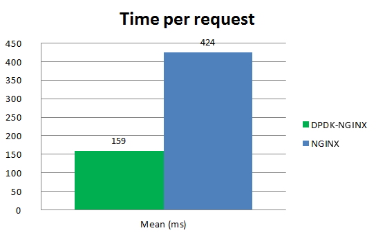

DPDK-Nginx VS Nginx
通过在两台虚拟机安装部署DPDK-Nginx和普通Nginx进行测试

在测试环境中，对DPDK-NGINX和NGINX在同一硬件/软件环境下进行了相同的ab测试。结果见下表和图表。
| DPDK-NGINX | Nginx | |
|---|---|---|
| command line: | ab -n 3000 -c 300 http://2.2.2.2:8000/payload_pic.jpg | ab -n 3000 -c 300 http://172.20.6.192:8000/payload_pic.jpg |
| tcp stack: | dpdk-odp | standard Linux stack |
| Server Software: | dpdk-nginx/1.9.5 | nginx/1.9.13 |
| Document Length: | 13288 bytes | 13288 bytes |
| Concurrency Level: | 300 | 300 |
| Complete requests: | 3000 | 3000 |
| Failed requests: | 0 | 0 |
| Time taken for tests | 1.600 seconds | 4.250 seconds |
| Requests per second(mean): | 1875.45 [#/sec] | 705.94 [#/sec] |
| Time per request(mean): | 159.962 [ms] | 424.962 [ms] |
| Time per request(mean, across all concurrent requests): | 0.533 [ms] | 1.417 [ms] |
| Transfer rate: | 24769.07 [Kbytes/sec] | 9324.12 [Kbytes/sec] |
| Connection Times(min) ms: | 13 | 105 |
| Connection Times(mean) ms: | 151 | 385 |
| Connection Times(max) ms: | 270 | 509 |



测试的结果上，归功于DPDK的加速网络栈（ANS）DPDK-NGINX的性能要高出Nginx3倍。 鉴于这是在虚拟环境中的的测试结果，在带有真实DPDK适配器的生产环境中，可以肯定的是DPDK-NGINX会显示出更高的性能。